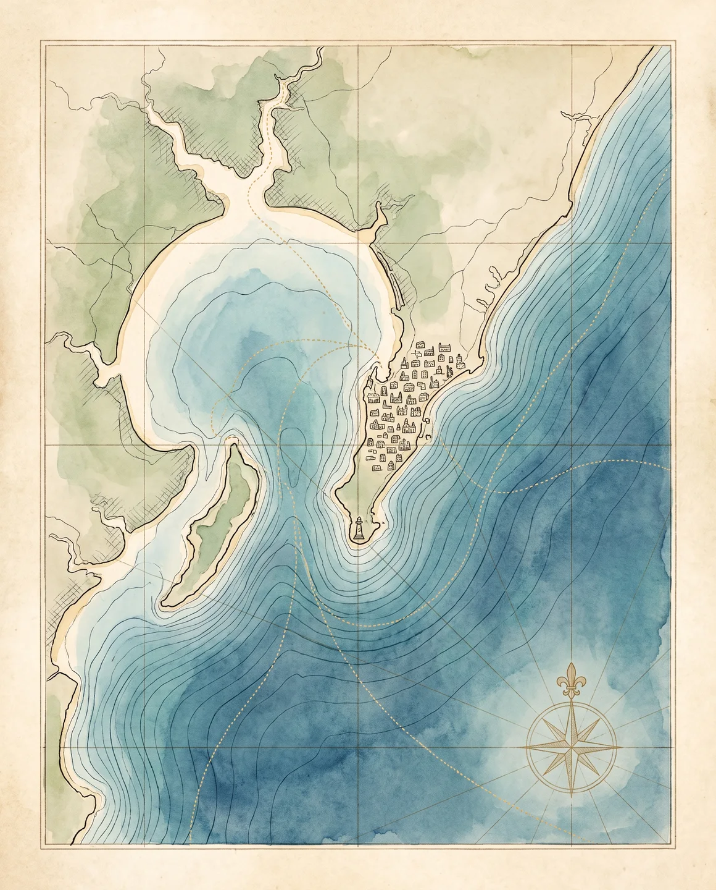
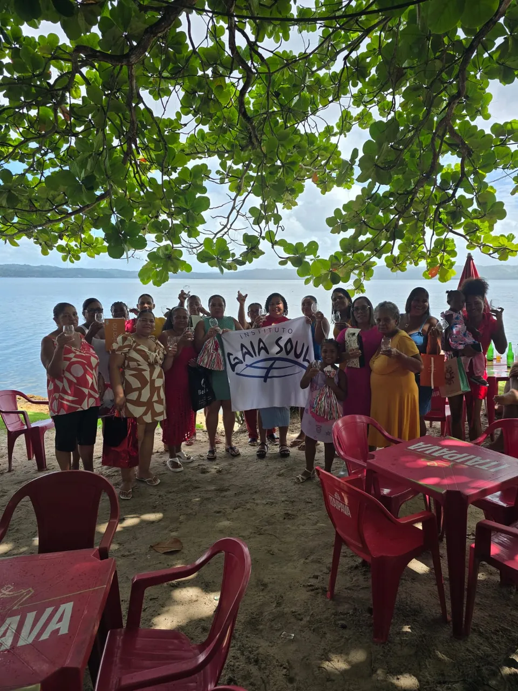

Maré de Campeões · Baía do Iguape
Campeãs baianas de jiu-jitsu
As irmãs gêmeas Larissa e Stella encontraram no esporte um caminho de disciplina, pertencimento e conquista, e se tornaram campeãs baianas de jiu-jitsu.
Nossa atuação conecta Cultura Oceânica, educação, tecnologia, bem-estar e territórios. Cada iniciativa nasce de um propósito comum: aproximar pessoas do oceano e transformar essa conexão em conhecimento, consciência e ação.
Início / Atuação & Impacto
Traduzimos ciência e conhecimento sobre o oceano em experiências educativas acessíveis e capazes de despertar curiosidade, consciência e pertencimento.
11 livros didáticos autorais, alinhados à BNCC e à Década do Oceano.
Utilizamos realidade virtual, audiovisual e experiências sensoriais para permitir que diferentes públicos conheçam e vivenciem o universo oceânico.
Experiências levadas a escolas, aeroportos e shopping centers.
Criamos experiências que estimulam a reconexão consciente com a água e a natureza, promovendo presença e bem-estar.
Vivências no mar, práticas contemplativas e experiências sensoriais.
Desenvolvemos iniciativas conectadas às realidades sociais, ambientais e culturais dos territórios e de suas comunidades.
2 comunidades quilombolas e 650 famílias de pescadores e marisqueiras na Baía do Iguape.
Publicamos somente dados consolidados e verificáveis.

Litoral da BahiaBaía do IguapeRecôncavo BaianoBaía de Todos-os-SantosSalvadorOceano AtlânticoAs irmãs gêmeas Larissa e Stella encontraram no esporte um caminho de disciplina, pertencimento e conquista, e se tornaram campeãs baianas de jiu-jitsu.

Com treinador, uniformes, bolas e lanche garantidos pelo Instituto, o Real São Francisco reúne 60 jovens de 12 a 17 anos e chegou ao vice-campeonato em 2025.

Em parceria com a Associação dos Pescadores e Marisqueiras de Cachoeira, o Instituto está presente nas datas que importam para as comunidades tradicionais do território.
Pessoas, empresas, escolas, comunidades e organizações podem ajudar a construir uma sociedade mais conectada ao oceano.